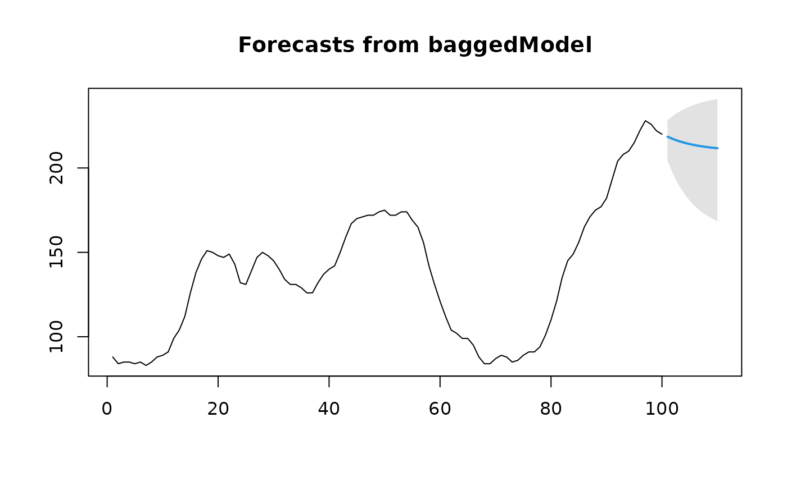

The bagged model forecasting method.
baggedModel(y, bootstrapped_series = bld.mbb.bootstrap(y, 100), fn = ets, ...) baggedETS(y, bootstrapped_series = bld.mbb.bootstrap(y, 100), ...)
| y | A numeric vector or time series of class |
|---|---|
| bootstrapped_series | bootstrapped versions of y. |
| fn | the forecast function to use. Default is |
| ... | Other arguments passed to the forecast function. |
Returns an object of class "baggedModel".
The function print is used to obtain and print a summary of the
results.
A list containing the fitted ensemble models.
The function for producing a forecastable model.
The original time series.
The bootstrapped series.
The arguments passed through to fn.
Fitted values (one-step forecasts). The mean of the fitted values is calculated over the ensemble.
Original values minus fitted values.
This function implements the bagged model forecasting method described in
Bergmeir et al. By default, the ets function is applied to all
bootstrapped series. Base models other than ets can be given by the
parameter fn. Using the default parameters, the function
bld.mbb.bootstrap is used to calculate the bootstrapped series
with the Box-Cox and Loess-based decomposition (BLD) bootstrap. The function
forecast.baggedModel can then be used to calculate forecasts.
baggedETS is a wrapper for baggedModel, setting fn to "ets".
This function is included for backwards compatibility only, and may be
deprecated in the future.
Bergmeir, C., R. J. Hyndman, and J. M. Benitez (2016). Bagging Exponential Smoothing Methods using STL Decomposition and Box-Cox Transformation. International Journal of Forecasting 32, 303-312.
Christoph Bergmeir, Fotios Petropoulos
